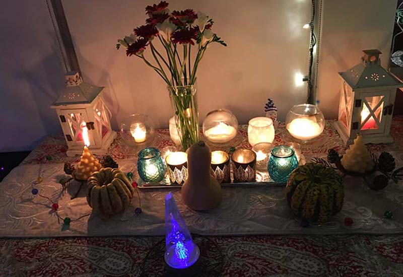

I started off as a typical Canadian child, although my father being in the military had us living in PMQs (Private Military Quarters)
and I had never really met a civilian until I was 9 years old. We moved 4 times, Armstrong, B.C. where I was born, to Fort Churcill, Manitoba to
Edmonton, Alberta by the time I was 6 with a final move to Calgary, Alberta at 9 years of age.
My father was sent overseas to work for the Peace Corp mission, at the Gaza Strip, in Egypt. He left when I was 8 and I didn't
see him again until about 8 months later when he was granted leave for Christmas. On Christmas night I was filled with pride
and joy to be able to sing to him in the Church Choir while he beamed back at me. That night, he had a heart attack. My brother,
sister and I heard it all - the paramedics taking him away, my mother crying. I have a vague memory of Dad trying to smile at us
and reassure us that he would be okay as they wheeled him away. My sister and I went back to our room, got on our knees and prayed.
After he got out of the hospital, the Army put him back to work. He was transferred again to Calgary and travelled from Edmonton
to Calgary every week. In June while in Calgary, he had another heart attack. I was called to the principals office in grade 2
and sent home never to see my classmates again. We were driven to Calgary by an uncle and set up in a new PMQ.
My brother may have known what was happening but my sister and I had no clue. We were just spending summer vacation in a new town
where we didn't know a soul. We were like any kids, watching tv and going to the store for junk food. One day my Mom asked us
to go with her to the hospital to see Dad. We didn't want to, we wanted to just veg out. So we didn't go. He died that night.
The Chaplain came to the door that morning and my sister opened the door. She knew right away Dad was gone. She looked up to see my Mother meet
the Chaplain's eyes and then saw that our Mother knew too. When I woke
up they took me into my mom's bedroom and told me. The world suddenly had no floor, there was nothing to hold onto, we all
went free falling into our grief.
TOO BAD SO SAD, YOU'RE EVICTED
The army forced us to vacate the PMQ and my Mother who luckily had always worked, was offered a job with them in Calgary.
My grandmother had died 3 months earlier and my grandfather, without discussing it with my Mom, had sold his home in Burnaby and asked my
Mom if he could move in with us. He had money from the house sale and he helped my mom to buy a house.
So it was my brother who was off to university soon, my sister in high school, me, my mom and some scary
old dude living in a strange new home.
My sister, brother and I were left in our sorrow as my Mother didn't really understand that kids had feelings
about death just like adults did. We never saw his body at the hospital and we didn't get to attend the funeral.
We were like a ghost family now. Every night I could hear my Mom crying in her room and my Grandfather
crying in his room. I was terrified to go to sleep as I was worried Mom would die and we would be orphans.
OTHER INFLUENCES
There were other deaths that happened while I was young besides my Grandmother and Father. My brother's best friend
in university, who was a frequent visitor to our home, killed himself in his bedroom.
His parents called my brother, then 20, to come and help deal with the police I guess, deal with the remains of a shotgun to the head.
His girlfriend had killed herself a few months earlier in her dorm room. This wave of students killing themselves
brought to my 13 year old mind that perhaps this was an acceptable thing to do when you became a young adult.
When I was 15 my cousin (and secret crush) stormed out of the house after a fight with his father. Later that night,
he felt bad about it and decided to walk home along the highway. A drunk driver hit him from behind.
It took some time for the police to find out who he was as he had no identification. We were on vacation - just coming home
when we heard about it on the news radio. My cousin's sister did too and secretly took it upon herself to go to the hospital.
She found her brother, still alive but without brain function. The family let him go and actually they let themselves go as well.
They too became a ghost family.
THE LESSONS KEEP COMING
My ex-husband had refused to grow up and be any kind of a father to my first two children. Occasionally he would reach out to them
when forced to due to some kind of drug or alcohol intervention. My kids didn't buy into the game, as they were busy proving to him
how little they needed him. He was a tough guy logger and he just loved his chainsaw. As a faller, he was the one to cut down the trees.
When his doctor told him he had a heart condition, and needed surgery, with rest after, he didn't listen. He kept working, tough guy
that he was. The night he collapsed, the paramedics couldn't land in the remote location he was in as the fog had settled in, so he died,
in his early 50s. Maybe his burdens were to hard to bear.
A little over ten years ago, in 2010 my step-brother died of Lung Cancer at 53. He was closer with me than my real brother and I don't think a day
goes by that I don't think of him. He had a chance after getting and beating Hodgkins Lymphoma years earlier, if he would just quit smoking.
Being stubborn and incapable of change, he smoked to the very last evening. One of us would have to hold the cigarette to his mouth
as he couldn't manage it. Holding the disgusting cigarette that had killed him to his lips was repugnant but we all did it anyway, for him.
He died in a hospice. This was my first experience in a hospice and I was really impressed with the atmosphere of the place.
It was very hands off, they supplied the medications and would come if called but it was basically up to the families to take care of the
patients. I peeked in other rooms where it seemed no one was every visiting. That hit me hard, to see people dying alone...
His leaving was very beautiful however, with the family gathered around, singing and holding hands. The part where he drew his last breath
however, left us all ugly crying and lost. More broken people, because he had been our family glue. Once he was gone, the family disintegrated.
My Mother and Step-Father had been very dependent on him and with him gone they accelerated their decline.
After the loss of their son, it took only 8 more months for my Step-Dad to go and another few weeks to lose my Mother.
My sister and I were in town helping her through her battery replacement of her pace-maker surgery. The doctor had taken her off her Coumadin
which is a blood thinner. We showed up at her apartment one morning to find her incoherent and confused. We called 911 and she was wisked away to
the hospital. When we got there we couldn't even locate her. No help from anyone. We found her tucked away in a small room like a closet basically.
Once diagnosed with multiple strokes, she was placed on a ward with 3 other people, all men in various states of dying and delusion. I think
of the man across from her, naked and screaming about the war. My Mother would stare at him and his bare bum and balls with utter terror in
her eyes. The nurse assigned to sit with them to contain the delusional chaos, spent her time reading a book, ignoring them.
Any questions I asked were met with annoyance. It was at that point that I decided she had to be moved to the care home where her husband had died.
They knew her there, she was friends with many of them and it was her second home as she visited him every day.
Getting some of the siblings to agree to the move took everything on my part. They didn't want to spend the money. We had a
battle of wills standing over my Mom's bedside arguing. I won. She was transferred to the care home and all of the family descended upon her room to say
goodbye. Before she became unconscious for the final time, she reached her arms to me as I walked in the room. She cried out to me with gratitude
that I was there. And she said she was sorry for all that had gone on with my Step-father. All was forgiven.
We sang to her, there were her children, her grand-children and a couple of great-grand babies in the room. With her eyes shut, she swirled her
invisible baton, orchestrating us and getting in the last laugh. When she died, she gave me the greatest gift I have ever received. She let
out a surprised and delighted sigh. I knew then that whoever she saw - perhaps her own Mom, perhaps my Dad, brought her great joy and where ever
she went was was pleasing to her and full of peace.
BECOMING AN ADVOCATE
It is all these experiences that made me become an End of Life Doula by taking the program at Douglas College and fulfilling
the prerequisites (including passing a Criminal Records check) needed to become certified. The End of Life Doula Association
of Canada is aiming to make this service part of the federal Medicare program.
It was the experience of missing out on meaningful closure when I
lost people in my childhood. Of not being allowed to attend funerals. Of not being allowed to talk about the deceased in case it brought
up too much pain. As if the pain wasn't already right under the surface.

It was the way other people reacted to our father's death. My sister and I were playing outside - needing to get away from all the grief
that had just happened after losing our father. We heard a neighbor say "look at those kids, their father just died and they don't even
care!" It was going into grade 3 and having the other kids either make light of it or go over the top with fake sympathy. I learned to
keep his death a secret. He was not dead, he was a travelling salesman. Always out of town.
And on the positive side, being a strong advocate for my Mother, ensuring she died in a place that cared about her, with her dignity (no naked
balls in sight) made me more proud of myself than anything else I have ever done.
I somehow stumbled upon the reality of Death Doulas, Death Midwives, End of Life Doulas and the whole Positive Death Movement that is
sweeping the world. I felt like it was the anchor I needed to move my
energy practice beyond my
treatment room and into the world where people need it most.
It may not be for everyone, but for me there is nothing morbid about it. It is the opposite, it is about providing
the dying and their families with the knowledge and support to maintain their dignity and independence right to the very end.